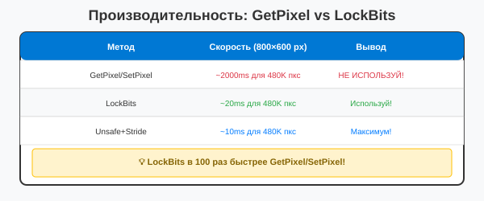

Урок 3.3: Работа с Bitmap напрямую
📌 Ключевые моменты этого урока:
- GetPixel/SetPixel медленны в 100+ раз для обработки целых изображений
- LockBits предоставляет прямой доступ к пиксельным данным (~100x faster)
- Stride - это количество байт в одной строке пикселей (может быть больше чем ширина × 4)
- PixelFormat определяет формат каждого пикселя (ARGB, RGB, 8-bit, etc)
- Unsafe код позволяет использовать указатели для ещё большей производительности
Производительность: GetPixel vs LockBits
КРИТИЧНО для производительности! GetPixel и SetPixel очень медленные операции:

Сравнение производительности методов доступа к пикселям
LockBits и UnlockBits
Для максимальной производительности при работе с пикселями используйте прямой доступ к данным изображения:
Bitmap bmp = new Bitmap(800, 600);
BitmapData bmpData = bmp.LockBits(
new Rectangle(0, 0, bmp.Width, bmp.Height),
ImageLockMode.ReadWrite,
PixelFormat.Format32bppArgb
);
// Работа с данными
IntPtr ptr = bmpData.Scan0;
int bytes = Math.Abs(bmpData.Stride) * bmp.Height;
byte[] rgbValues = new byte[bytes];
System.Runtime.InteropServices.Marshal.Copy(ptr, rgbValues, 0, bytes);
// Изменение пикселей
for (int i = 0; i < rgbValues.Length; i += 4)
{
rgbValues[i] = 255; // B
rgbValues[i + 1] = 0; // G
rgbValues[i + 2] = 0; // R
rgbValues[i + 3] = 255; // A
}
System.Runtime.InteropServices.Marshal.Copy(rgbValues, 0, ptr, bytes);
bmp.UnlockBits(bmpData);Stride: понимание структуры памяти
ВАЖНО: Stride - не всегда equals Width × 4! Это реальное количество байт между строками:
// Пример: 800×600 изображение
// Может быть Stride = 3200 (800 × 4), но часто выравнивается до 3200
BitmapData bmpData = bmp.LockBits(...);
int stride = bmpData.Stride; // может быть > Width × 4 по причинам выравнивания
int width = bmp.Width;
int height = bmp.Height;
// Правильный способ обхода пикселей:
unsafe
{
byte* ptr = (byte*)bmpData.Scan0;
for (int y = 0; y < height; y++)
{
// ВАЖНО: используем Stride, не Width × 4
byte* row = ptr + (y * stride);
for (int x = 0; x < width; x++)
{
row[x * 4 + 0] = 0; // Blue
row[x * 4 + 1] = 0; // Green
row[x * 4 + 2] = 255; // Red
row[x * 4 + 3] = 255; // Alpha
}
}
}
bmp.UnlockBits(bmpData);PixelFormat: форматы пикселей
// Главные форматы:
PixelFormat.Format32bppArgb // ARGB 32-bit (самый частый) - 4 байта/пиксель
PixelFormat.Format24bppRgb // RGB 24-bit (нет альфы) - 3 байта/пиксель
PixelFormat.Format8bppIndexed // 8-bit палитра (самый компактный)
PixelFormat.Format16bppRgb565 // 16-bit RGB (редко)
// При LockBits всегда проверяйте реальный формат:
BitmapData bmpData = bmp.LockBits(...);
int bytesPerPixel = Image.GetPixelFormatSize(bmpData.PixelFormat) / 8;
// Для Format32bppArgb -> bytesPerPixel = 4
// Для Format24bppRgb -> bytesPerPixel = 3Для еще большей производительности используйте unsafe код:
unsafe
{
BitmapData bmpData = bmp.LockBits(...);
byte* ptr = (byte*)bmpData.Scan0;
for (int y = 0; y < bmp.Height; y++)
{
byte* row = ptr + (y * bmpData.Stride);
for (int x = 0; x < bmp.Width; x++)
{
int pixelIndex = x * 4;
row[pixelIndex] = 255; // B
row[pixelIndex + 1] = 0; // G
row[pixelIndex + 2] = 0; // R
row[pixelIndex + 3] = 255; // A
}
}
bmp.UnlockBits(bmpData);
}Важно: Включите "Allow unsafe code" в настройках проекта.
Прямой доступ к пикселям
// Медленный способ (для небольших изображений)
Color pixel = bmp.GetPixel(10, 20);
bmp.SetPixel(10, 20, Color.Red);
// Быстрый способ (через LockBits)
// Используйте код вышеКогда это нужно
- Обработка больших изображений
- Применение фильтров к изображениям
- Генерация изображений по пикселям
- Требования высокой производительности
Практическое задание
Задание 1: Инвертирование цветов (GetPixel/SetPixel)
- Создайте приложение с кнопкой
- Загрузите изображение:
private Bitmap originalImage; private void Form1_Load(object sender, EventArgs e) { originalImage = new Bitmap(@"путь\к\изображению.jpg"); } - В обработчике Click кнопки инвертируйте цвета:
private void button1_Click(object sender, EventArgs e) { Bitmap inverted = new Bitmap(originalImage); for (int y = 0; y < inverted.Height; y++) { for (int x = 0; x < inverted.Width; x++) { Color pixel = inverted.GetPixel(x, y); Color invertedPixel = Color.FromArgb( 255 - pixel.R, 255 - pixel.G, 255 - pixel.B ); inverted.SetPixel(x, y, invertedPixel); } } this.BackgroundImage = inverted; } - Запустите приложение — посмотрите, как долго это займет
Задание 2: Инвертирование цветов (LockBits)
- Используйте LockBits для ускорения:
private void button1_Click(object sender, EventArgs e) { Bitmap inverted = new Bitmap(originalImage); Rectangle rect = new Rectangle(0, 0, inverted.Width, inverted.Height); BitmapData bmpData = inverted.LockBits( rect, ImageLockMode.ReadWrite, inverted.PixelFormat); int bytesPerPixel = System.Drawing.Image.GetPixelFormatSize(bmpData.PixelFormat) / 8; unsafe { byte* ptr = (byte*)bmpData.Scan0; for (int y = 0; y < inverted.Height; y++) { byte* row = ptr + (y * bmpData.Stride); for (int x = 0; x < inverted.Width; x++) { int pixelIndex = x * bytesPerPixel; row[pixelIndex + 2] = (byte)(255 - row[pixelIndex + 2]); // R row[pixelIndex + 1] = (byte)(255 - row[pixelIndex + 1]); // G row[pixelIndex] = (byte)(255 - row[pixelIndex]); // B } } } inverted.UnlockBits(bmpData); this.BackgroundImage = inverted; } - Включите "Allow unsafe code" в настройках проекта
- Запустите приложение — должно быть намного быстрее!
Задание 3: Черно-белый фильтр
- Создайте черно-белый фильтр:
private Bitmap ConvertToGrayscale(Bitmap source) { Bitmap gray = new Bitmap(source.Width, source.Height); Rectangle rect = new Rectangle(0, 0, gray.Width, gray.Height); BitmapData bmpData = gray.LockBits( rect, ImageLockMode.ReadWrite, gray.PixelFormat); unsafe { byte* ptr = (byte*)bmpData.Scan0; for (int y = 0; y < gray.Height; y++) { byte* row = ptr + (y * bmpData.Stride); for (int x = 0; x < gray.Width; x++) { int pixelIndex = x * 4; byte grayValue = (byte)((row[pixelIndex + 2] * 0.299 + row[pixelIndex + 1] * 0.587 + row[pixelIndex] * 0.114)); row[pixelIndex] = grayValue; // B row[pixelIndex + 1] = grayValue; // G row[pixelIndex + 2] = grayValue; // R row[pixelIndex + 3] = 255; // A } } } gray.UnlockBits(bmpData); return gray; } - Используйте этот метод в обработчике Click
💡 Совет: LockBits в 10-100 раз быстрее GetPixel/SetPixel. Используйте его для обработки больших изображений.
Проверка знаний
Ответьте на вопросы, чтобы проверить, насколько хорошо вы усвоили материал:
1. Для чего используется LockBits?
2. Что быстрее: GetPixel/SetPixel или LockBits?
3. Что такое Stride в BitmapData?
4. Какой PixelFormat использует 4 байта на пиксель?
5. Какой метод разблокирует Bitmap после LockBits?
6. В каком порядке идут байты в Format32bppArgb?
7. Какое свойство BitmapData указывает на начало данных?
8. Нужно ли включать "Allow unsafe code" для LockBits?